在 Markdown 文档中使用 LaTeX 输入公式


关于 Markdown 的标题、段落、字体等样式的设置，请看这里。
本文介绍如何在 Markdown 文档中使用 LaTeX 输入公式，也可做 LaTeX 速查手册之用。本文档按照以下顺序排列：公式样式（如分数、上下标等）- 希腊字母、特殊字符 - 字体及文字颜色格式 - 其他不常用命令。可先翻阅右侧的目录以大致了解文档结构。
本文不作过多文字性描述，更多时候只提供 Typora 中可以简单实现的 LaTeX 示例代码。读者只需要在 Typora 中输入对应的代码，即可看到实时预览的效果。（所有的代码块都可以复制！将鼠标移至代码块上，会发现右上角出现复制图标，点击图标即可复制！）
本文档目前尚在修改中，日后会加入更多的文字说明。
读者若想进一步了解 LaTeX 这种排版方式并用它来编辑更多文档，可以参考以下内容：（这个将来或许也会写成一篇单独的文档）
- 语法介绍：一份不太简短的 LaTeX2e 介绍与一份其实很短的 LaTeX 入门文档。
- 环境配置：请看这里。
1、公式的插入
①行中公式
对于 Typora，在设置-Markdown-Markdown 扩展语法中勾选“行内公式”就可以使用这个语法了。
代码：
$x=0$效果： $x=0$
②独立公式
代码：
$$
x=0
$$效果： $$ x=0 $$
2、上下标
代码：
$x^{y^z}=(1+e^x)^{-2xy^w}$
$x_1=x_2+2$
$\underset{6}\bigotimes$效果：
$x^{y^z}=(1+e^x)^{-2xy^w}$
$x_1=x_2+2$
$\underset{6}\bigotimes$
3、分数
代码：
$\frac{a}{b}\quad\dfrac{a}{b}\quad {a\over b}$效果： $\frac{a}{b}\quad\dfrac{a}{b}\quad {a\over b}$
4、括号和分隔符
代码：
$\langle\quad\rangle\quad\lceil\quad\rceil\quad\lfloor\quad\rfloor\quad\lbrace\quad\rbrace\quad\lVert\quad\rVert$
$f(x,y,z)=3y^2z\left(3+\dfrac{7x+5}{1+y^2}\right)$
$\left.\dfrac{\mathrm{d}u}{\mathrm{d}x}\right|_{x=0}$效果：
$\langle\quad\rangle\quad\lceil\quad\rceil\quad\lfloor\quad\rfloor\quad\lbrace\quad\rbrace\quad\lVert\quad\rVert$
$f(x,y,z)=3y^2z\left(3+\dfrac{7x+5}{1+y^2}\right)$
$\left.\dfrac{\mathrm{d}u}{\mathrm{d}x}\right|_{x=0}$
说明：
\quad代表空格\left( \right)代表根据其所括起来的内容可变大小的括号，具体见下一点。\mathrm代表数学正体。
5、大括号和行标
说明：使用\left和\right来创建自动匹配高度的()、[]、{}、.。在每个公式末尾使用\tag{行标}来实现行标。
代码：
$$
f\left(
\left[
\dfrac{1+\{x,y\}}{\left(\dfrac{x}{y}+\dfrac{y}{x}\right)(u+1)}+a
\right]
^{\dfrac{3}{2}}
\right)
\tag{行标}
$$效果： $$ f\left(\left[\dfrac{1+{x,y}}{\left(\dfrac{x}{y}+\dfrac{y}{x}\right)(u+1)}+a\right]^{\dfrac{3}{2}}\right)\tag{1} $$
说明：如果你想将行内显示的分隔符也变大，也可以使用\middle命令
代码：
$$
\left\langle q\middle\|\dfrac{\dfrac{x}{y}}{\dfrac{u}{v}}\middle|p\right\rangle
$$效果： $$ \left\langle q\middle|\dfrac{\dfrac{x}{y}}{\dfrac{u}{v}}\middle|p\right\rangle $$
6、开方
代码：
$\sqrt{2}\quad\sqrt[3]{2}$效果： $\sqrt{2}\quad\sqrt[3]{2}$
7、省略号与多点
代码:（\quad代表空格）
$\cdots\quad\ldots\quad\vdots\quad\ddots$效果： $\cdots\quad\ldots\quad\vdots\quad\ddots$
8、矢量和均值
代码：
$
\overrightarrow{E(\vec{r})}
\overleftarrow{E(\vec{r})}
\overleftrightarrow{E(\vec{r})}
\underrightarrow{E(\vec{r})}
\underleftarrow{E(\vec{r})}
\underleftrightarrow{E(\vec{r})}
\overline{v}=\bar{v}
\underline{v}
$效果： $\overrightarrow{E(\vec{r})}\quad\overleftarrow{E(\vec{r})}\quad\overleftrightarrow{E(\vec{r})}\quad\underrightarrow{E(\vec{r})}\quad\underleftarrow{E(\vec{r})}\quad\underleftrightarrow{E(\vec{r})}\quad\overline{v}=\bar{v}\quad\underline{v}$
9、积分
代码：
$$
\iint\limits_D\left(\dfrac{\partial Q}{\partial x}-\dfrac{\partial P}{\partial y}\right){\rm d}x{\rm d}y=\oint\limits_LP{\rm d}x+Q{\rm d}y
$$效果： $$ \iint\limits_D\left(\dfrac{\partial Q}{\partial x}-\dfrac{\partial P}{\partial y}\right){\rm d}x{\rm d}y=\oint\limits_LP{\rm d}x+Q{\rm d}y $$
10、极限
代码：
$\lim\limits_{n\to\infin}(1+\dfrac{1}{n})^n=e$效果： $\lim\limits_{n\to\infin}(1+\dfrac{1}{n})^n=e$
11、累加、累乘及交集、并集
$
\sum\limits_{i=1}^n\dfrac{1}{n^2}
\prod\limits_{i=1}^n\dfrac{1}{n^2}
\bigcup\limits_{i=1}^n\dfrac{1}{n^2}
\bigcap\limits_{i=1}^n\dfrac{1}{n^2}
$效果： $\sum\limits_{i=1}^n\dfrac{1}{n^2}\quad \quad\prod\limits_{i=1}^n\dfrac{1}{n^2}\quad \quad\bigcup\limits_{i=1}^n\dfrac{1}{n^2}\quad \quad\bigcap\limits_{i=1}^n\dfrac{1}{n^2}$
12、上加帽、上加点、上加波浪（带帽符号）
| 输入 | 显示 | 输入 | 显示 |
|---|---|---|---|
| \hat{xy} | $\hat{xy}$ | \widehat{xyz} | $\widehat{xyz}$ |
| \tilde{xy} | $\tilde{xy}$ | \widetilde{xyz} | $\widetilde{xyz}$ |
| \check{x} | $\check{x}$ | \breve{y} | $\breve{y}$ |
| \grave{x} | $\grave{x}$ | \acute{y} | $\acute{y}$ |
| \dot{x} | $\dot{x}$ | \ddot{x} | $\ddot{x}$ |
13、选取符号（下括号、上括号、框选）
| 输入 | 显示 | 输入 | 显示 |
|---|---|---|---|
| \fbox{a+b+c+d} | $\fbox{a+b+c+d}$ | ||
| \overbrace{xx\cdots x}^{lots\ of\ x} | $\overbrace{xx\cdots x}^{lots\ of\ x}$ | \underbrace{xx\cdots x}_{lots\ of\ x} | $\underbrace{xx\cdots x}_{lots\ of\ x}$ |
14、矩阵
①无框矩阵
代码：
$$
\begin{matrix}
1&x&x^2\\
1&y&y^2\\
1&z&z^2\\
\end{matrix}
$$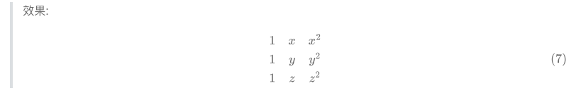
②边框矩阵
说明：在开头将matrix替换为pmatrix、bmatrix、Bmatrix、vmatrix、Vmatrix。
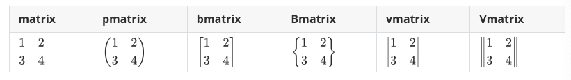
③带分割线的矩阵
说明：可以使用cc|c来在一个三列矩阵中插入分割线。
代码：
$$
\left[
\begin{array}{cc|c}
1&2&3\\
4&5&6
\end{array}
\right]
$$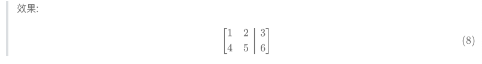
15、方程式序列
说明：可以使用\begin{align}...\end{align}来创建一列整齐且默认右对齐的方程式序列。请注意{align}是自动编号的，使用{align*}来声明停止自动编号，也可以使用\notag来取消特定行的自动编号。在需要的时候，你可以使用\begin{equation}...\end{equation}来强制表达式自动编号。
代码： $$ \begin{align} f(x)&=1+1\ &=2 \end{align} $$
$$ \begin{equation} \left[ \begin{array}{cc|c} 1&2&3\ 4&5&6 \end{array} \right] \end{equation} $$
$$
\begin{align}
\sqrt{37}=\sqrt{\dfrac{73^2-1}{12^2}}\\
&=\sqrt{\dfrac{73^2}{12^2}\cdot\dfrac{73^2-1}{73^2}}\\
&=\sqrt{\dfrac{73^2}{12^2}}\sqrt{\dfrac{73^2-1}{73^2}}\notag\\
&=\dfrac{73}{12}\sqrt{1-\dfrac{1}{73^2}}\\
\approx\dfrac{73}{12}\left(1-\dfrac{1}{2\cdot73^2}\right)\label{A}
\end{align}
$$
***
$$
\begin{align*}
v+m&=0&\text{Given}\tag1\\
-w&=-w+0&\text{additive identity}\tag2\\
-w+0&=-w+(v+w)&\text{equations $(1)$ and $(2)$}
\end{align*}
$$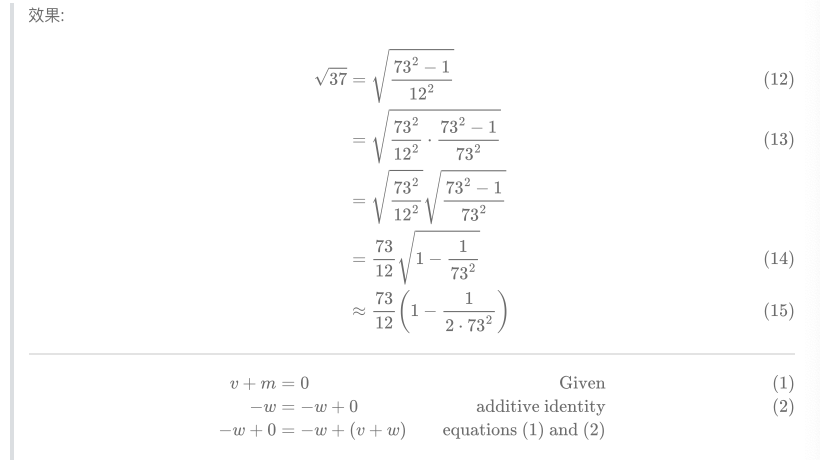
你可以使用\label{标签}来创建一个标签，就如上面的方程式序列中展示的那样，之后使用\eqref{标签}引用你想引用的公式。如果不想要括号，可以输入\ref{标签}。
公式 1 和 2 的不同列之间存在间隔，如果你不想要，可以通过将align替换为alignat{1}来去除列间隔。
16、条件表达式
说明：使用\begin{cases}来创造一组默认左对齐的条件表达式，在每一行插入&来指定需要对齐的内容，并在每一行结尾处使用\\,以\end{cases}结尾。
代码：
$$
f(n)=
\begin{cases}
n/2,&\text{if $n$ is even}\\
3n+1,&\text{if $n$ is odd}
\end{cases}
$$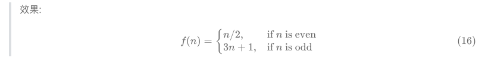
17、配置行高
说明：可以使用\\[2ex]语句替代该行末尾的\\来让编译器适配 , 其中[ex]指一个"X-Height" , 即 x 字母高度 , 也可以使用[3ex]或[4ex]等。
代码：
$$
f(n)=
\begin{cases}
\dfrac n2,&\text{if $n$ is even}\\[2ex]
3n+1,&\text{if $n$ is odd}
\end{cases}\tag{适配[2ex]}
$$
***
$$
f(n)=
\begin{cases}
\dfrac n2,&\text{if $n$ is even}\\
3n+1,&\text{if $n$ is odd}
\end{cases}\tag{不适配[2ex]}
$$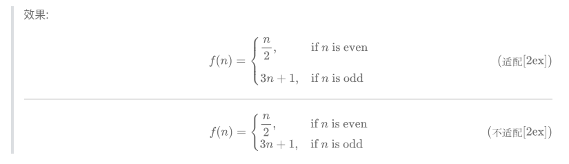
18、数组与表格
说明：数组与表格均以\begin{array}开头，并在其后定义列数及每一列的文本对齐方式，c l r分别代表居中、左对齐及右对齐。若要插入垂直分割线，在定义中插入|，若要插入水平分割线，在定义中加入\hline。
代码：
$$
\begin{array}{c|lcr}
n&\text{left}&\text{center}&\text{right}\\
\hline
1&0.24&1&125\\
2&-1&189&-8\\
3&-20&2000&1+10i
\end{array}
$$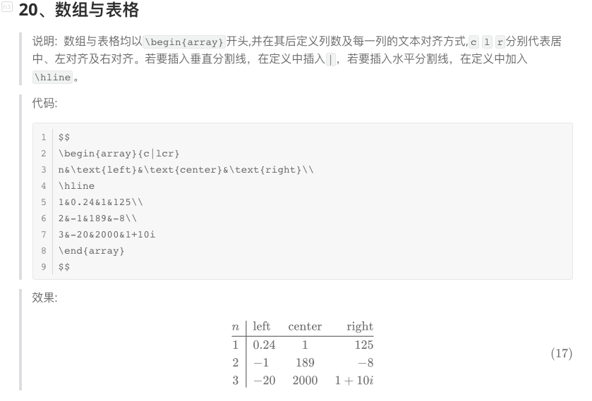
19、希腊字母
| 语法 | 字母 | 语法 | 字母 | 语法 | 字母 |
|---|---|---|---|---|---|
| \Alpha(\alpha) | $\Alpha(\alpha)$ | \Beta(\beta) | $\Beta(\beta)$ | \Gamma(\gamma) | $\Gamma(\gamma)$ |
| \Epsilon(\epsilon)\varepsilon | $\Epsilon(\epsilon)\varepsilon$ | \Zeta(\zeta) | $\Zeta(\zeta)$ | \Eta(\eta) | $\Eta(\eta)$ |
| \Iota(\iota) | $\Iota(\iota)$ | \Kappa(\kappa)\varkappa | $\Kappa(\kappa)\varkappa$ | \Lambda(\lambda) | $\Lambda(\lambda)$ |
| \Nu(\nu) | $\Nu(\nu)$ | \Xi(\xi) | $\Xi(\xi)$ | \Omicron(\omicron) | $\Omicron(\omicron)$ |
| \Rho(\rho)\varrho | $\Rho(\rho)\varrho$ | \Sigma(\sigma)\varsigma | $\Sigma(\sigma)\varsigma$ | \Tau(\tau) | $\Tau(\tau)$ |
| \Phi(\phi)\varphi | $\Phi(\phi)\varphi$ | \Chi(\chi) | $\Chi(\chi)$ | \Psi(\psi) | $\Psi(\psi)$ |
| \Delta(\delta) | $\Delta(\delta)$ | \Theta(\theta)\vartheta | $\Theta(\theta)\vartheta$ | \Mu(\mu) | $\Mu(\mu)$ |
| \Pi(\pi)\varpi | $\Pi(\pi)\varpi$ | \Omega(\omega) | $\Omega(\omega)$ | \upsilon | $\upsilon$ |
| \ell | $\ell$ | \eth | $\eth$ | \hbar | $\hbar$ |
| \hslash | $\hslash$ | \mho | $\mho$ | \partial | $\partial$ |
20、注释文字
代码：
$\text{文字 abcd}abcd1234$效果：$\text{文字 abcd}abcd1234$
21、特殊字符
①说明
可以在字符前使用\large或\small以显示更大或更小的字符。
代码：
${\LARGE A}{\Large A}{\large A}A{\small A}$效果：
${\LARGE A}{\Large A}{\large A}A{\small A}$
②关系运算符
| 输入 | 显示 | 输入 | 显示 | 输入 | 显示 |
|---|---|---|---|---|---|
| \pm(\mp) | $\pm(\mp)$ | \times | $\times$ | \div | $\div$ |
| \nmid | $\nmid$ | \cdot | $\cdot$ | \mid | $\mid$ |
| \bigodot | $\bigodot$ | \bigotimes | $\bigotimes$ | \bigoplus | $\bigoplus$ |
| \ge | $\ge$ | \le | $\le$ | \ll | $\ll$ |
| \geqslant | $\geqslant$ | \leqslant | $\leqslant$ | \neq | $\neq$ |
| \approx | $\approx$ | \xlongequal{text} | $\xlongequal{text}$ | \triangleq | $\triangleq$ |
| \sim | $\sim$ | \doteq | $\doteq$ | \equiv | $\equiv$ |
| \cong | $\cong$ | \propto | $\propto$ | \parallel(\ | ) |
| \prec | $\prec$ | \pmod{2} | $\pmod{2}$ | \bmod | $\bmod{2}$ |
③集合运算符
| 输入 | 显示 | 输入 | 显示 | 输入 | 显示 |
|---|---|---|---|---|---|
| \emptyset | $\emptyset$ | \varnothing | $\varnothing$ | ||
| \subset | $\subset$ | \subseteq | $\subseteq$ | \subsetneq | $\subsetneq$ |
| \supset | $\supset$ | \supseteq | $\supseteq$ | \supsetneq | $\supsetneq$ |
| \bigcap | $\bigcap$ | \bigcup | $\bigcup$ | \setminus | $\setminus$ |
| \bigvee | $\bigvee$ | \bigwedge | $\bigwedge$ | ||
| \in | $\in$ | \notin | $\notin$ | \ni | $\ni$ |
④三角运算符
| 输入 | 显示 | 输入 | 显示 | 输入 | 显示 |
|---|---|---|---|---|---|
| \circ | $\circ$ | \bot | $\bot$ | \angle | $\angle$ |
| \degree | $\degree$ |
⑤微积分运算符
| 输入 | 显示 | 输入 | 显示 | 输入 | 显示 |
|---|---|---|---|---|---|
| \int | $\int$ | \iint | $\iint$ | \iiint | $\iiint$ |
| \oint | $\oint$ | \oiint | $\oiint$ | \prime(‘) | $\prime$ |
| \lim | $\lim$ | \infin | $\infin$ | \nabla | $\nabla$ |
| \grad | ∇ |
⑥逻辑运算符
| 输入 | 显示 | 输入 | 显示 | 输入 | 显示 |
|---|---|---|---|---|---|
| \because | $\because$ | \therefore | $\therefore$ | ||
| \forall | $\forall$ | \exist | $\exist$ | ||
| \not> | $\not>$ | \not< | $\not<$ | ||
| \land | $\land$ | \lor | $\lor$ | \lnot | $\lnot$ |
| \top | $\top$ | \vdash | $\vdash$ | \vDash | $\vDash$ |
⑨箭头符号
| 输入 | 显示 | 输入 | 显示 | 输入 | 显示 |
|---|---|---|---|---|---|
| \leftarrow | $\leftarrow$ | \rightarrow | $\rightarrow$ | \leftrightarrow | $\leftrightarrow$ |
| \longleftarrow | $\longleftarrow$ | \longrightarrow | $\longrightarrow$ | \longleftrightarrow | $\longleftrightarrow$ |
| \Leftarrow | $\Leftarrow$ | \Rightarrow | $\Rightarrow$ | \Leftrightarrow | $\Leftrightarrow$ |
| \Longleftarrow | $\Longleftarrow$ | \Longrightarrow | $\Longrightarrow$ | \Longleftrightarrow | $\Longleftrightarrow$ |
| \uparrow | $\uparrow$ | \downarrow | $\downarrow$ | \updownarrow | $\updownarrow$ |
| \Uparrow | $\Uparrow$ | \Downarrow | $\Downarrow$ | \Updownarrow | $\Updownarrow$ |
| \to | $\to$ | \swarrow | $\swarrow$ | \nearrow | $\nearrow$ |
| \gets | $\gets$ | \searrow | $\searrow$ | \nwarrow | $\nwarrow$ |
| \mapsto | $\mapsto$ | \rightrightarrows | $\rightrightarrows$ |
⑩空格
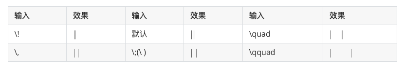
22、字体
语法：${\字体{需要转换的字符}}$
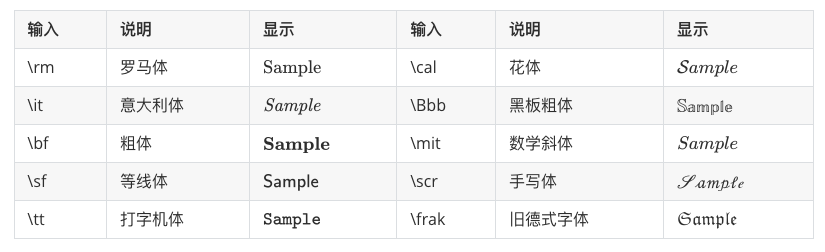
在公式中的对应标记为：\mathrm（数学粗体，如$\mathbf{R}$）、\mathcal（数学花体，如$\mathcal{P}$）、\mathbb（数学黑板粗体，如$\mathbb{R}$）。
23、文字颜色
- 适用新旧浏览器 代码：
$\color{颜色}{文字}$| 输入 | 显示 | 输入 | 显示 | 输入 | 显示 |
|---|---|---|---|---|---|
| black | $\color{black}{color}$ | grey | $\color{grey}{color}$ | silver | $\color{silver}{color}$ |
| white | $\color{white}{color}$ | maroon | $\color{maroon}{color}$ | red | $\color{red}{color}$ |
| yellow | $\color{yellow}{color}$ | lime | $\color{lime}{color}$ | olive | $\color{olive}{color}$ |
| green | $\color{green}{color}$ | teal | $\color{teal}{color}$ | auqa | $\color{auqa}{color}$ |
| blue | $\color{blue}{color}$ | navy | $\color{navy}{color}$ | purple | $\color{purple}{color}$ |
| fuchsia | $\color{fuchsia}{color}$ |
- 适用新版浏览器 代码：
$\color{#rgb}{文字}$ (注：其中 r、g、b 可以输入 0~9 和 a~f 来分别表示红色、绿色和蓝色的纯度)| 输入 | 输出 | 输入 | 输出 | 输入 | 输出 | 输入 | 输出 |
|---|---|---|---|---|---|---|---|
| #000 | $\color{#000}{color}$ | #005 | $\color{#005}{color}$ | #00A | $\color{#00A}{color}$ | #00F | $\color{#00F}{color}$ |
| #500 | $\color{#500}{color}$ | #505 | $\color{#505}{color}$ | #50A | $\color{#50A}{color}$ | #50F | $\color{#50F}{color}$ |
| #A00 | $\color{#A00}{color}$ | #A05 | $\color{#A05}{color}$ | #A0A | $\color{#A0A}{color}$ | #A0F | $\color{#A0F}{color}$ |
| #F00 | $\color{#F00}{color}$ | #F05 | $\color{#F05}{color}$ | #F0A | $\color{#F0A}{color}$ | #F0F | $\color{#F0F}{color}$ |
| #050 | $\color{#050}{color}$ | #055 | $\color{#055}{color}$ | #05A | $\color{#05A}{color}$ | #05F | $\color{#05F}{color}$ |
| #550 | $\color{#550}{color}$ | #555 | $\color{#555}{color}$ | #55A | $\color{#55A}{color}$ | #55F | $\color{#55F}{color}$ |
| #A50 | $\color{#A50}{color}$ | #A55 | $\color{#A55}{color}$ | #A5A | $\color{#A5A}{color}$ | #A5F | $\color{#A5F}{color}$ |
| #F50 | $\color{#F50}{color}$ | #F55 | $\color{#F55}{color}$ | #F5A | $\color{#F5A}{color}$ | #F5F | $\color{#F5F}{color}$ |
| #0A0 | $\color{#0A0}{color}$ | #0A5 | $\color{#0A5}{color}$ | #0AA | $\color{#0AA}{color}$ | #0AF | $\color{#0AF}{color}$ |
| #5A0 | $\color{#5A0}{color}$ | #5A5 | $\color{#5A5}{color}$ | #5AA | $\color{#5AA}{color}$ | #5AF | $\color{#5AF}{color}$ |
| #AA0 | $\color{#AA0}{color}$ | #AA5 | $\color{#AA5}{color}$ | #AAA | $\color{#AAA}{color}$ | #AAF | $\color{#AAF}{color}$ |
| #FA0 | $\color{#FA0}{color}$ | #FA5 | $\color{#FA5}{color}$ | #FAA | $\color{#FAA}{color}$ | #FAF | $\color{#FAF}{color}$ |
| #0F0 | $\color{#0F0}{color}$ | #0F5 | $\color{#0F5}{color}$ | #0FA | $\color{#0FA}{color}$ | #0FF | $\color{#0FF}{color}$ |
| #5F0 | $\color{#5F0}{color}$ | #5F5 | $\color{#5F5}{color}$ | #5FA | $\color{#5FA}{color}$ | #5FF | $\color{#5FF}{color}$ |
| #AF0 | $\color{#AF0}{color}$ | #AF5 | $\color{#AF5}{color}$ | #AFA | $\color{#AFA}{color}$ | #AFF | $\color{#AFF}{color}$ |
| #FF0 | $\color{#FF0}{color}$ | #FF5 | $\color{#FF5}{color}$ | #FFA | $\color{#FFA}{color}$ | #FFF | $\color{#FFF}{color}$ |
24、删除线
说明：使用\require{cancel}声明，再使用\cancel{字符}、\bcancel{字符}、\xcancel{字符}、\cancelto{字符}{字符}来实现各种片段删除线效果。
代码：
$$
\require{cancel}\begin{array}{r1}
\verb|y+\cancel{x}|&y+\cancel{x}\\
\verb|y+\cancel{y+x}|&y+\cancel{y+x}\\
\verb|y+\bcancel{x}|&y+\bcancel{x}\\
\verb|y+\xcancel{x}|&y+\xcancel{x}\\
\verb|y+\cancelto{0}{x}|&y+\cancelto{0}{x}\\
\verb+\frac{1\cancel9}{\cancel95}=\frac15+&\frac{1\cancel9}{\cancel95}=\frac15\\
\end{array}
$$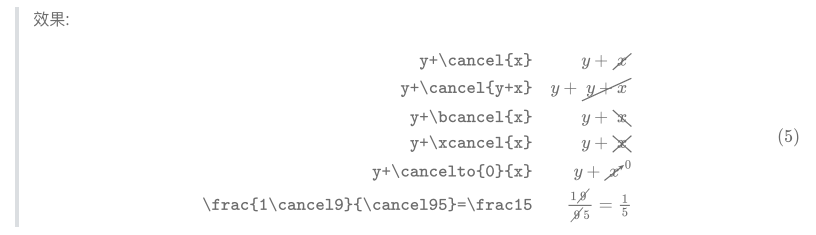
说明：使用\require{enclose}来允许整段删除线的显示，再使用\enclose{删除线效果}{字符}来使用各种整段删除线效果。其中，删除线效果有horizontalstrike、verticalstrike、updiagonalstrike和downdiagonalstrike,可以叠加使用。
代码：
$$
\require{enclose}\begin{array}{r1}
\verb|\enclose{horizontalstrike}{x+y}|&\enclose{horizontalstrike}{x+y}\\
\verb|\enclose{verticalstrike}{\frac xy}|&\enclose{verticalstrike}{\frac xy}\\
\verb|\enclose{updiagonalstrike}{x+y}|&\enclose{updiagonalstrike}{x+y}\\
\verb|\enclose{downdiagonalstrike}{x+y}|&\enclose{downdiagonalstrike}{x+y}\\
\verb|\enclose{horizontalstrike,updiagonalstrike}{x+y}|&\enclose{horizontalstrike,updiagonalstrike}{x+y}\\
\end{array}
$$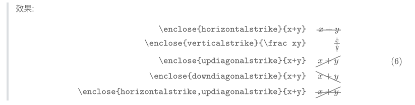